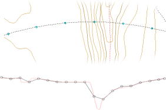
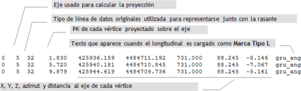
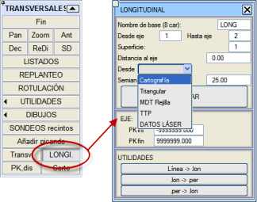
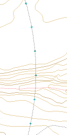
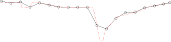
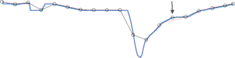

| |
|
BOYKESİT ALIMI
|
|
Genel Bilgiler Boykesit çıkarmanın birkaç amacı vardır. Bunlardan ilki, kırmızı kotu tasarlayabilmek için eksenin geçtiği arazi veya yüzey hakkında bir referans elde etmektir. Diğer durumlarda, örneğin incelenmesi gereken bir hendek olduğu için eksenden 5 metre uzakta ne olduğunu öğrenmek istenebilir. Boykesit elde etmenin diğer yolları, arazinin enkesitlerinden eksendeki kotu çıkarmak veya güzergah alternatiflerini değerlendirmek için haritadaki herhangi bir mevcut çizgiyi yansıtmaktır. Örneğin, ekseni kesen bir elektrik hattı veya başka bir karayolu ile farklı seviyeli bir geçiş (BOYKESİT → LİSTELER → GEOMETRİ → [BİR ÇİZGİNİN İZDÜŞÜMÜ] seçeneği kullanılarak). Topografik bilginin kalitesi ve yoğunluğu, üretilen sonuçlarla yakından ilişkilidir, bu nedenle sayısal harita verisinin kalitesini kontrol etmek için zaman ayırma genel tavsiyesi geçerlidir. Boykesit dosyalarının uzantısı .lon'dur.
.lon Dosya Formatı Bu ASCII dosyalarının formatı çok basittir. Aşağıdaki şemada, kullanıcının diğer uygulamalardan gelen bilgileri dönüştürebilmesi veya oluşturabilmesi için yapısı açıklanmaktadır: 
Haritadan Alım Bu işlevsellik, enkesit oluşturmayı sağlayanla aynı yerde, yani hem PLAN hem de BOYKESİT dikey menüsünden erişilebilen [APL. ve PROFİL] menüsünde bulunur. Bilginin alınacağı yüzeyin doğru bir şekilde tanımlanması zorunludur. İletişim kutusu varsayılan olarak temel ad olarak LONG sunar, bu ad değiştirilebilir. Daha sonra kolayca tanımlanabilecek adlar kullanılması önerilir, örneğin elektrik için ELEC, kanalizasyon için KANAL, sağ hendek için HEN_S vb. Eksene olan mesafe, eksene paralel bir çizgi çizilerek elde edilecek 'kesiti' almak için kullanılır; sol için negatif, sağ için pozitif. Enkesitte kullanılan çizgi tipi, yüzeyi tanımlayan ilk çizgi tipi olacaktır. Ayrıca, her eksen için boykesiti çıkarmak üzere başlangıç ve bitiş KM'si belirtilebilir. Boykesit şu şekillerde elde edilebilir:
Eğer EKSEN 0'dan EKSEN 0'a girilirse, program otomatik sistemi 'terk eder' ve [OLUŞTUR]'a basıldığında, komut satırında aşağıdaki veriler istenir:
Diğer Araçlar
Optimal Boykesit Oluşturma Enkesit verilerinin 'yorumlanmasıyla' oluşturulan boykesit, aşağıda gösterilen grafik örneklerde görülebileceği gibi araziye sadık değildir. Açıklama oldukça basittir. Noktalar düzenli aralıklarla, varsayılan olarak aliymanlarda her 20 metrede ve kurplarda biraz daha az aralıkla elde edilir. Bu nedenle, bu noktalardan herhangi birinin topografik yüzey çizgileriyle kesişmesi neredeyse imkansız veya tesadüfidir. Öte yandan, klasik bir boykesitten elde edilen bilgi de sadık değildir, çünkü sadece bir çizgiyle kesişim olan yerlerde noktalar oluşturur.  Soldaki çizimde, eşyükselti eğrilerinin enkesitlerden çıkarılan boykesitle 'görünmez' olacak bir dere yatağı tanımladığı bir bölge görülmektedir. Ancak, klasik boykesit araziye mükemmel bir şekilde uyum sağlar (işaretli noktalar her 20 m'deki KM'lerdir, kırmızı renkteki boykesittir).  Amaç, ikisinin bir 'karışımını' elde etmektir. Bu, enkesitleri yükledikten sonra boykesiti arazi olarak yükleyerek basitçe elde edilir. 
ISTRAM®/ISPOL®, boykesitin 'iyi' noktalarını araya ekler, dairelerle belirtilen başlangıç noktalarını ve özellikle okla işaretleneni korur (mavi çizgi nihai boykesittir). Topografik yüzeyi sadakatle temsil eden hassas bir çizgi elde etmek isteniyorsa, şu tavsiyelere uyulmalıdır:
Sonuçlar Enkesit çıkarımı için elde edilebilecek özel nokta sayısı, bir boykesit elde etmek için uygulanandan çok daha fazladır; bunun nedeni, ilk yöntemle enkesit tanımında kullanılan herhangi bir KM'nin kullanılabilmesidir. Boykesitler, tasarıma destekleyici bilgi sağlar, güzergahla 'kesişen' ve tanımlanması gereken unsurları temsil eder. Ayrıca, yorumlanmış boykesitle birleştirildiğinde, profili yumuşatır ve düzeltir, topografik yüzeye uyum sağlar. |